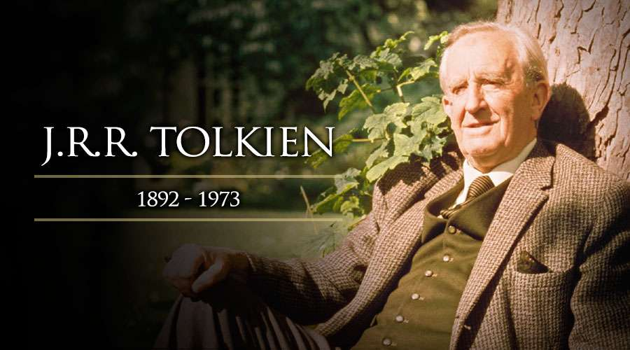

Sir John Ronald Reuel Tolkien
«La fantasía es, como muchas otras cosas, un derecho legítimo de todo ser humano, pues a través de ella se halla una completa libertad y satisfacción».

John Ronald Reuel Tolkien (1892-1973) fue un filólogo del siglo XX, profesor de anglosajón y literatura inglesa en Oxford, erudito en lenguas, mitos, leyendas y textos antiguos, creador de libros magistrales y, además, un buen ilustrador. Su obra máxima, El señor de los anillos, es considerada la mejor novela de siglo.
Cronologia
- -1892 - Nacio en Bloemfontein, Sudáfrica.
- -1894- nació su hermano menor, Hilary Arthur.
- -1896- vivió en Sudáfrica hasta la muerte de su padre; por lo que se trasladó con su familia a Inglaterra.
- -1896- Ese mismo año volvieron a mudarse a Sarehole (en la actualidad, en Hall Green), por entonces una pequeña villa de Worcestershire, más tarde absorbida por Birmingham. A Ronald le encantaba explorar el cercano bosque de la turbera de Moseley y la aceña de Sarehole, así como las colinas de Clent y de Lickey, lugares que más adelante inspirarían algunos pasajes en sus obras, junto con otros parajes de Worcestershire como Bromsgrove y Alvechurch, Alcester (Warwickshire) y la granja de su tía, Bag End («Bolsón Cerrado»), nombre que utilizaría en sus relatos.
- -1904- cuando Ronald tenía doce años, Mabel su madre falleció debido a complicaciones de diabete.
- -1908-a los dieciséis años, Tolkien conoció en el orfanato a Edith Mary Bratt, de quien se enamoró pese a ser tres años menor; en sus obras edith serviria de inspiracion para dar forma al personaje de LUTHIEN.
- -1911-mientras estaba en el colegio King Edward de Birmingham, Tolkien formó junto con tres amigos (Robert Gilson, Geoffrey Smith y Christopher Wiseman) una sociedad semisecreta conocida como la T.C., B.S., las iniciales del Tea Club and Barrovian Society («Club de Té y Sociedad Barroviana»).
- -1911-Tolkien viajó de vacaciones a Suiza, un viaje que rememoró en una carta en 1968 de forma aún muy vívida, donde señalaba que el viaje de Bilbo a través de las Montañas Nubladas (incluyendo el «deslizamiento por las piedras resbaladizas hasta el bosque de pinos») está directamente basado en sus aventuras con su grupo de doce compañeros de excursión desde Interlaken hasta Lauterbrunnen, y en su acampada en las morrenas más allá de Mürren. Cincuenta y siete años más tarde, Tolkien recordaba su profunda pena al abandonar las vistas de las nieves perpetuas de Jungfrau y Silberhorn, «la Silvertine (Celebdil) de mis sueños».
- -1916-Se casa con Edith en Warwick.
- -1916 - Tolkien se unió al Ejército Británico que luchaba por entonces en la Primera Guerra Mundial. Se enroló con el rango de teniente segundo, especializado en señales (transmisiones), en el 11º Batallón de Servicio de los Fusileros de Lancashire.
- -1917- trasladado a Inglaterra, durante su convalecencia en una cabaña en Great Haywood (Staffordshire), comenzó a trabajar en lo que llamó El libro de los cuentos perdidos con «La caída de Gondolin».
- -1920- ocupó el puesto de profesor no titular de Lengua inglesa en la Universidad de Leeds, donde alcanzó el cargo de profesor, reformando con su magisterio la enseñanza de esta disciplina.
- -1924- nació su tercer hijo, Christopher, quien se encargaría de publicar póstumamente todos los manuscritos que su padre había dejado desparramados por el estudio en su casa de Northmoor Road.
- -1925- regresó a Oxford como profesor de Anglosajón en el Pembroke College. Fue durante su estancia en Pembroke que Tolkien escribió El hobbit y los dos primeros volúmenes de El Señor de los Anillos.
- -1937- C. S. Lewis lo persuadió para que publicara El hobbit, originalmente escrito para sus hijos.26 Sin embargo, el libro a su vez atrajo a lectores adultos, y se volvió lo suficientemente popular como para la editorial, George Allen & Unwin, por lo que le pidieron a Tolkien que escribiera una secuela a la obra.
- - 1936- su conferencia titulada «Beowulf: los monstruos y los críticos» tuvo una decisiva influencia en los estudios acerca del mito de Beowulf.
- - 1957- Tolkien viajaba a Estados Unidos para recibir títulos honoríficos de las principales universidades, como Marquette (donde hoy en día se conservan los manuscritos originales de sus obras) y Harvard. El viaje tuvo que suspenderse, pues Edith cayó enferma. Tolkien se retiró dos años después de su cargo en Oxford.
- -1961- C. S. Lewis lo propuso como candidato para el Premio Nobel de Literatura, pero el jurado desestimó la propuesta por su «pobre prosa».
- -1965- se publicó la primera edición de El Señor de los Anillos en Estados Unidos.
- - 1968- la familia Tolkien se trasladó a Poole, cerca de Bournemouth.En esta época fue nombrado doctor honoris causa por varias universidades, vicepresidente de la Philological Society y miembro de la Royal Society of Literature.
- -1969- la reina Isabel II le nombró Comendador de la Orden del Imperio Británico.1 En su honor se fundaron, en primer lugar, la Mythopoeic Society norteamericana y la Tolkien Society británica, y decenas de sociedades similares en diversos países.
- -1971-Edith muere el 29 de noviembre a la edad de 81 años.
- -1973-Tolkien volvió a Oxford, donde falleció 21 meses después, el 2 de septiembre de 1973, con 81 años, y fue enterrado en la misma tumba que su mujer. Esta tumba, situada en el cementerio de Wolvercote, en Oxford, presenta los nombres de «Beren» y «Lúthien» para Ronald y Edith, respectivamente, extraídos de la leyenda incluida en El Silmarillion acerca del amor entre estos dos seres de diferente naturaleza (la doncella elfa Lúthien y el mortal Beren) y del robo de uno de los Silmarils.